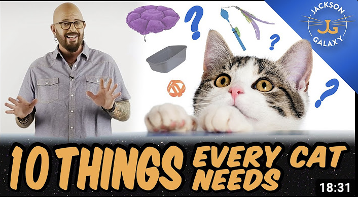
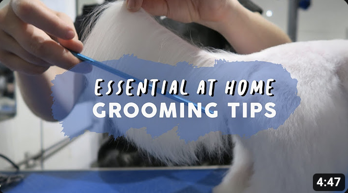

Cat

when it come to cats they tend to be ticky to take care of. one tip you can use is there shampoo. cats depend on there natual oils in there skin so you want to make sure you dont strip any of that away. the shampoo that we use is baby shampoo. another at home tip for cats would be to get there medication in liquid form so that it is easier to give to them.
Dog

when it comes to dogs they are typicaly easier than cats. similaly to cats you dont want to strip off your dogs natual oils. to avoid this choose a shampoo that will help there coat look and feel great. we use baby shampoo here. another tip is to hide there pill in food for easier intake.
Recommended Tips for cats
this video helps for your cat an what you can do for your favorite kitties.
10 things every cat needs!
Recommended Tips for dogs
This video will give you some tips for grooming your dogs at home! these tips will help alot!
At Home grooming tips for Dogs!